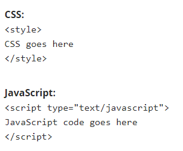

What is JavaScript?
JavaScript is a scripting language used to create and control dynamic website content, i.e. anything that moves, refreshes, or otherwise changes on your screen without requiring you to manually reload a web page. Features like:
- Animated graphics
- Photo slideshows
- Autocomplete text suggestions
- Interactive forms

Actually adding JavaScript code to a web page is a pretty simple process (and a familiar one if you’ve done any coding with HTML and CSS). JavaScript can be added directly to a page’s code using "script" tags and giving them the type attribute text/javascript. JavaScript looks very similar to adding CSS to a site. Here’s a side-by-side comparison:
An example is this: